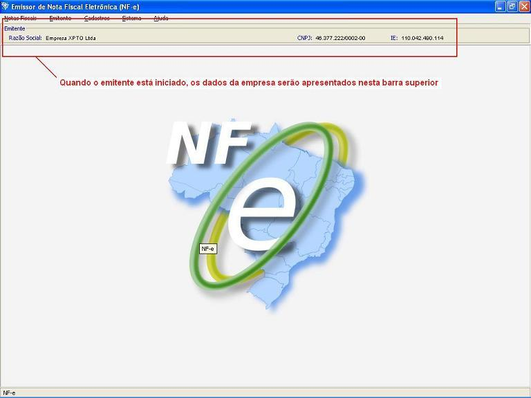

Software Emissor NF-e
Iniciando um Emitente
Opção para iniciar um Emitente para habilitar as demais funcionalidades da NF-e.
- Ir para a tela de Cadastro de Emitente
- Selecionar o emitente que deseja iniciar
- Clicar em Iniciar
- Os
dados do Emitente (Razão Social, CNPJ e IE) serão
carregados e exibidos na barra superior do Software, confirmando que o
Emitente foi iniciado com sucesso.
